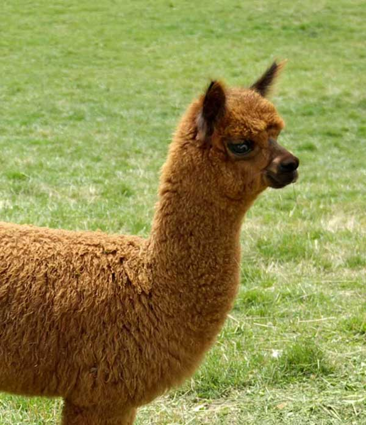

The llama is a domesticated South American camelid, widely used as a meat and pack animal by Andean cultures since the Pre-Columbian era. Llamas are social animals and live with others as a herd. Their wool is soft and contains only a small amount of lanolin. Llamas can learn simple tasks after a few repetitions. When using a pack, they can carry about 25 to 30% of their body weight for 8 to 13 km (5–8 miles).The name llama (in the past also spelled "lama" or "glama") was adopted by European settlers from native Peruvians.[4] The ancestors of llamas are thought to have originated from the Great Plains of North America about 40 million years ago, and subsequently migrated to South America about three million years ago during the Great American Interchange. By the end of the last ice age (10,000–12,000 years ago), camelids were extinct in North America.[3] As of 2007, there were over seven million llamas and alpacas in South America and over 158,000 llamas and 100,000 alpacas, descended from progenitors imported late in the 20th century, in the United States and Canada.
The alpaca is a species of South American camelid mammal. It is similar to, and often confused with, the llama. However, alpacas are often noticeably smaller than llamas. The two animals are closely related and can successfully crossbreed. Both species are believed to have been domesticated from their wild relatives, the vicuña and guanaco. There are two breeds of alpaca: the Suri alpaca and the Huacaya alpaca. Alpacas are kept in herds that graze on the level heights of the Andes of Southern Peru, Western Bolivia, Ecuador, and Northern Chile at an altitude of 3,500 to 5,000 metres (11,000 to 16,000 feet) above sea level.[1] Alpacas are considerably smaller than llamas, and unlike llamas, they were not bred to be working animals, but were bred specifically for their fiber. Alpaca fiber is used for making knitted and woven items, similar to sheep's wool. These items include blankets, sweaters, hats, gloves, scarves, a wide variety of textiles, and ponchos, in South America, as well as sweaters, socks, coats, and bedding in other parts of the world. The fiber comes in more than 52 natural colors as classified in Peru, 12 as classified in Australia, and 16 as classified in the United States. Alpacas communicate through body language. The most common is spitting to show dominance when they are in distress, fearful, or feel agitated. Male alpacas are more aggressive than females, and tend to establish dominance within their herd group. In some cases, alpha males will immobilize the head and neck of a weaker or challenging male in order to show their strength and dominance.